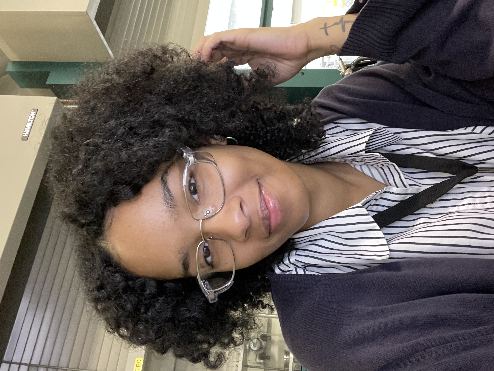

Victoria A. Smith

MLIS candidate
Graduate student with a strong foundation in research, data management, and customer service complemented by a background in chemistry and laboratory analysis. Experienced in library operations, community support, documentation, and organizational systems. Seeking opportunities in science/reference librarianship and community or special collections archives, leveraging interdisciplinary expertise and strong transferable skills.
"Take your people with you. Bring everyone who has loved you, with you."
- Maya Angelou
- Maya Angelou